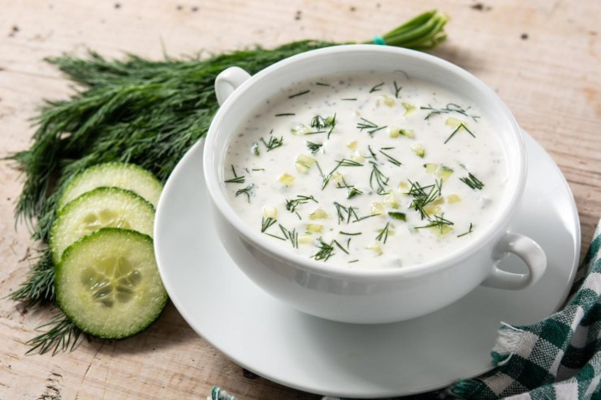

Soupe de poisson
СУПИ
Soupe de poisson
Soupe aromatique de poisson de mer avec herbes et légumes racines.
0.450 л / 5.80 лв
Soupe de poulet
Soupe de poulet maison légère avec légumes et nouilles.
0.450 л / 5.20 лв
Soupe de tripes
Soupe classique de tripes avec crème et ail.
0.450 л / 5.60 лв

Tarator
Soupe froide au yaourt avec concombre, ail, aneth et noix.
0.450 л / 5.50 лв
АЛАМИНУТИ
Pommes frites
Pommes de terre frites dorées avec croûte croustillante.
0.250 кг / 13.90 лв
Fromage frit
Fromage jaune pané, croustillant à l'extérieur.
0.200 кг / 12.90 лв
Bouchées de fromage
Dés de fromage panés et dorés.
0.200 кг / 12.90 лв
Fromage pané
Fromage fondu enrobé de croûte dorée.
0.250 кг / 13.90 лв
Fromage fondu pané
Fromage fondu frit dans une panure dorée.
0.250 кг / 13.90 лв
Mish-Mash
Mélange traditionnel de poivrons, tomates, œufs et fromage.
0.400 кг / 12.90 лв
Bouchées de poulet
Morceaux de poulet panés aux cornflakes.
0.200 кг / 7.50 лв
Purée de pommes de terre
Purée onctueuse au beurre.
0.250 кг / 8.50 лв